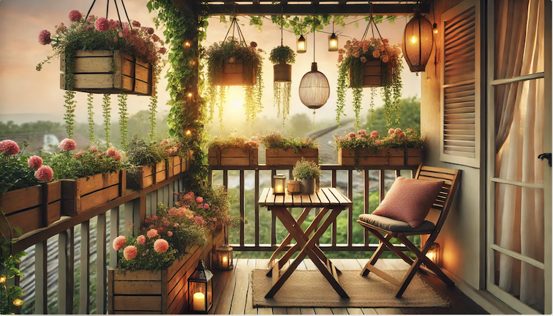
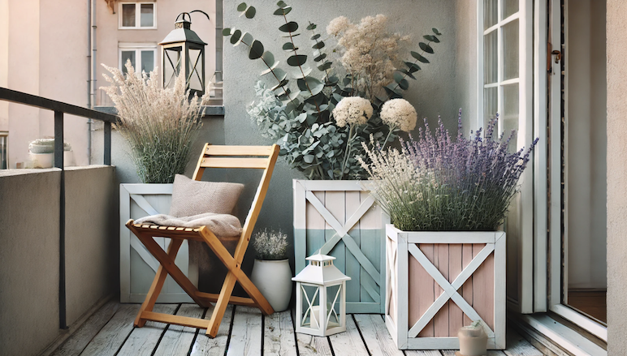
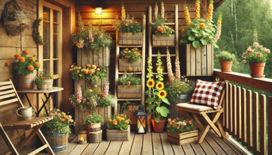

Приклади оформлення балконів
Ось кілька прикладів стильного оформлення відкритих балконів за допомогою квітів, дерев’яних ящиків, підставок і садових меблів:

Садова романтика
- • Квіти: Ампельні пеларгонії або лобелії у підвісних кашпо створюють ефект квітучого водоспаду
- • Ящики: Дерев’яні ящики з в’юнкими рослинами (плющ або запашний горошок) розташовані вздовж перил для створення природного “паркану”
- • Меблі: Невеликий столик і пара дерев’яних або металевих стільців із м’якими подушками
Скандинавський мінімалізм
- • Квіти: Білий лаванда, евкаліпт або зелень папороті
- • Ящики та підставки: Простого геометричного дизайну у світлому дереві або фарбовані у пастельні тони. Розміщення на різних рівнях для створення динаміки
- • Меблі: Складне дерев’яне крісло-шезлонг із м’яким пледом і невеликим ліхтарем для атмосферного освітлення


Зимовий куточок із хвойними рослинами
- • Квіти: Ампельні пеларгонії або лобелії у підвісних кашпо створюють ефект квітучого водоспаду
- • Рослини: Мініатюрні ялинки, туї, сосонки у дерев’яних ящиках. Додати можна гілочки омели чи декоративні ягоди
- • Дерев’яна лавка, покрита вовняним пледом, і мініатюрний столик для теплого чаю
Сільський шарм
- • Квіти: Пишні букети чорнобривців, мальв або соняшників у високих дерев’яних ящиках
- • Стенди: Підставки у вигляді дерев’яних драбин, де можна розмістити горщики різних розмірів
- • Садова лавка з натурального дерева та декоративні подушки в клітинку
